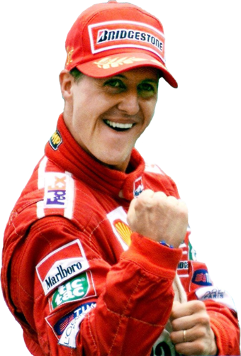
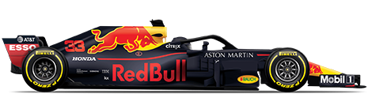
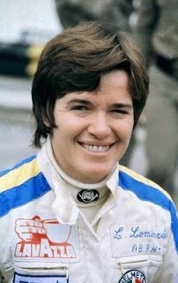

Esta é a música de abertura dos GP's de Fórmula 1. Esta música foi composta por Bryan Tyler
Michael Schumacher é o piloto mais condecorado de sempre, com 7 campeonatos mundiais. Lewis Hamilton está na "caça"deste feito contando já com 6 campeonatos.
Max Verstappen é o piloto mais novo de sempre a ter guiado um carro de F1, tendo-o feito com 17 anos e 2 dias. A partir daí tornou-se ilegal ter pilotos a competir com menos de 18 anos de idade.
A Ferrari é a equipa com mais títulos, tendo 16 Campeonatos de Construtores e 15 Campeonatos de Pilotos, sendo seguida pela McLaren.
Sobre carros:
Um carro da F1 consegue ir dos 0 aos 160Km/h, de volta aos 0 Km/h em 4 segundos.
O preço base de um carro utilizado na F1 ronda o 7 milhões de dólares.
O motor de um carro F1 dura menos de 5 corridas.
O motor dos carros da F1 não conseguem funcionar frios, normalmente são pré-aquecidos antes de serem usados.
Só uma mulher é que conseguiu pontoar no Grande Prémio e o seu nome era Lella Lombardi.
Um piloto perde à volta de 4 Quilogramas (Kg) durante uma corrida.
Cada pneu costuma perder 0,5 Kg durante uma utilização em corrida.

 Max Verstappen é o piloto mais novo de sempre a ter guiado um carro de F1, tendo-o feito com 17 anos e 2 dias. A partir daí tornou-se ilegal ter pilotos a competir com menos de 18 anos de idade.
Max Verstappen é o piloto mais novo de sempre a ter guiado um carro de F1, tendo-o feito com 17 anos e 2 dias. A partir daí tornou-se ilegal ter pilotos a competir com menos de 18 anos de idade.